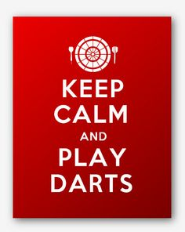

- Call Us: (01) - 1234567
- GetIntodarts.com
PRACTICE METHODS
Here are a few practice routines for beginners
Practising - High Scoring
It doesn’t matter what standard of player you are but hitting high consistent scores in a game is an essential part of the game. A consistent high scorer is more likely to win a game than one that occasional hits a 180 / 140 then 60 / 45. We have all been there at some stage but how do you improve? Practice of course and here are a few games I play to improve my game.
A good game to help you practice is to set yourself a target for hitting 60+ , 80+, 100+, 120+, 140+ and dare I say the magic 180! Set a target against each score, lets say 10 you now have a virtual opponent! Start by trying to hit 60 or more with three darts if you hit 60 or more you score a point if you fail to score 60 then your virtual opponent scores a point the first to ten wins!
This sort of practice will help you focus on your scoring you will be play a virtual opponent that is consistent and as you win more move the target up. For warming up don’t set you target to high.
If in a match you can score 10 - 20 more than the person you are playing against you will have an advantage when you come to finish, it may mean you will have the first shot at the double, even if you throw second in a leg.
Practising - Checkouts
Although I have placed a checkout chart on this site to help people not sure of finishing there are more way to finish than I have illustrated and in fact many of the two dart out shots would not be considered by players when they have three darts in their hand. But it is important to practise finishing as much as heavy scoring. If you can’t hit doubles consistently then you will lose more games than you will win even if you are a heavy scorer.
There are many ways to practise doubles, you can play a game of round the clock hitting each double in turn and set a target of the number of darts you take to hit them all then try to better yourself by beating the previous score. This type of practice is fine but I would concentrate more on doubles that break down easily and the higher numbers example:
20, 10, 5
16, 8, 4, 2, 1
18, 9
Most games you will see played are finished on these doubles, why? Two reasons:
They breakdown easily that means if you hit the big number as apposed to the double you will still be on another double.
High score finishes often involve high doubles.
Practising - Doubles
I suggest you first choose a double lets say 16 and then set a time to score as many of the doubles as you can within the time. A 10 – 15 min on a practise session should help you improve your chances when it comes to a match. If you can hit any double within two darts you are at a good standard.
Another way of helping you finishing is to play a game where you have to hit a number or combination of numbers before the double. An example of this could be 33 hit number 1 then double 16 once you hit it move the number up to 35 and practise all the finishes. This will improve your ability to hit all sectors of the board as well as doubles.
Practice game - '27'
27 is the number of points you begin with. Your first three darts are for double one, and so on until twenty and then bull. For each hit you get the value of the double hit (three double fours would score 24). If you miss three darts at a double you lose the value of that double. If your score reaches zero you lose. A good score is 400, and a very good score is 600. Once again, keep a record of your scores and your personal best.
IMPROVING YOUR ACCURACY
Boards
The game of darts is all about hand eye coordination. Some board manufactures also produce boards that have half size doubles and trebles the aim of this is to help you improve your accuracy. If you have ever played on a Manchester Log-End Dartboard then you will know what I mean. The doubles here are approximately 4mm wide! Playing on these boards will without question help you improve you game on standard board. But if you don’t have a board like this then you can help improve you accuracy in the following way.
Darts Match Preperation - Warm Up
If you can play others that are equal or slightly better than you before a match then this will help you when you come to play but if that’s not possible the have a virtual opponent. Set a game target i.e. number of darts to finish a game your virtual opponent will always hit. If you are a consistent 60 scorer set your target at 24 darts this sounds a lot when you look at the pro’s playing but I have watched and played in hundreds of pub and club games and you will be surprised how many games are won in 24 darts or more! Your objective is to score 501 and finish on a double within 24 darts. If you are of a standard that hits regular 100+ then set a target of 16 darts. A 16 dart game is considered very good throwing. The same rules apply score 501 with a double finish and see how many you win against your virtual opponent. If you are playing a 24 dart game and winning most or all bring the target down to 21 dart (i.e. a throw less and so on). This way you will feel some pressure to hit consistently.
There is no substitute for match play, the pressure is on, you either perform on the night or you don’t. Many good players can hit the big scores in practise but can’t when it comes to matches. I believe I fall into this category. Nerves and others expectations can all add to the tension and any tightening of the arm will inhibit your throw. The best advice I can give is arrive early so you can have a good practise before your match, play the game through your mind and concentrate on your scores not your opponent's above all enjoy the game, we can’t all win all of the time.
A FEW OTHER PRACTICE ROUTINES
Round the Board:-
Starting off, one of the most simple practice routines is to go around the board or around the clock as its sometimes referred to.
Starrting at no.1 and going all the way to no.20, try to hit a single of each number. Try to aim to bigger part of each single number. Hitting singles are vital especially when attempting to finish and win legs. Missing "big numbers" can result in not getting a shot a double.
As your skills progress, you can start attempting to put 2 out of three darts in each single number before moving onto the next number.
3 in a bed !
Simple enough to play, just try to put all 3 darts in 20, then move onto 19s and do the same,and keep going all the way down to seven maybe.